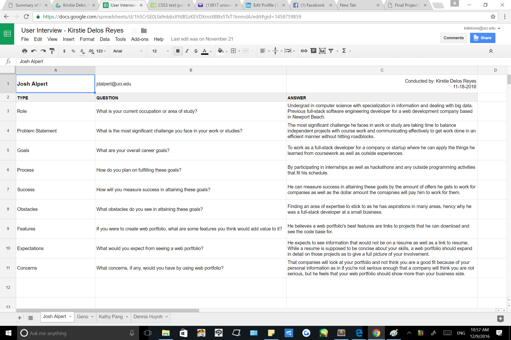
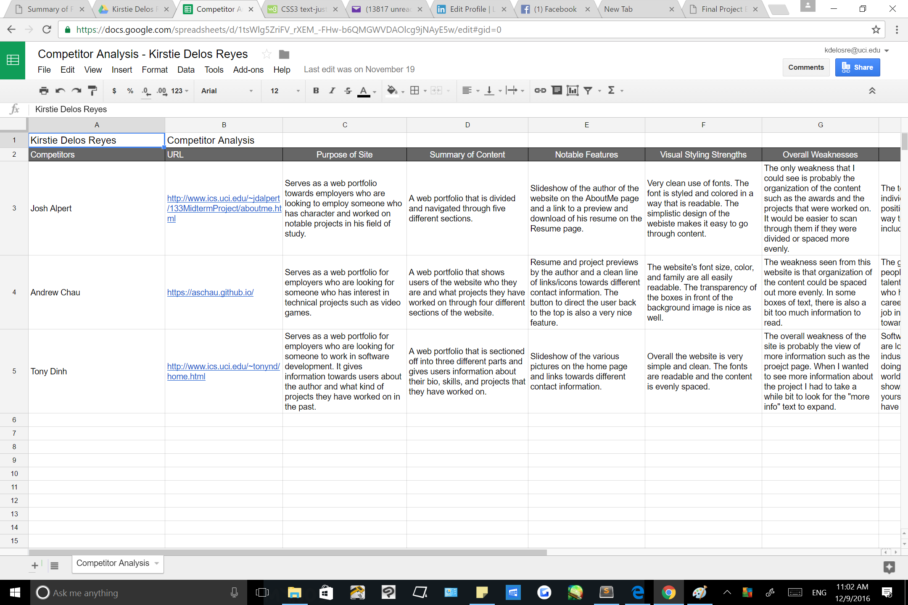
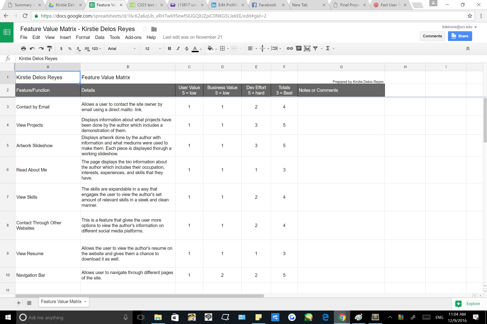
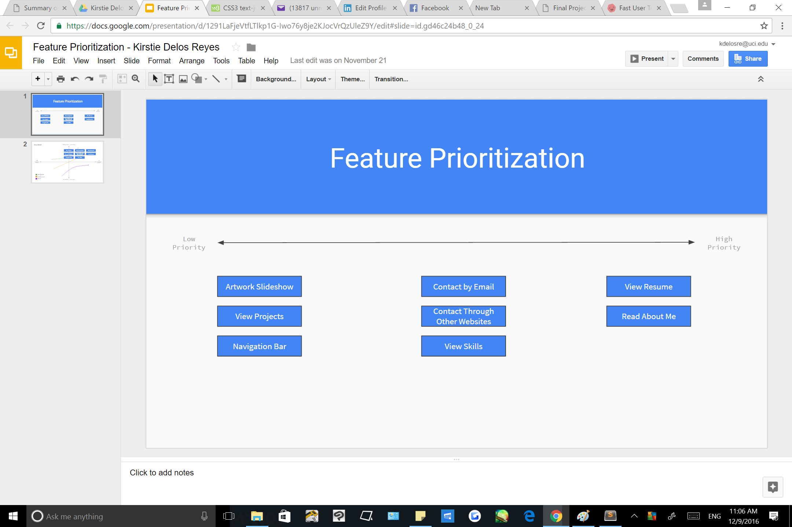
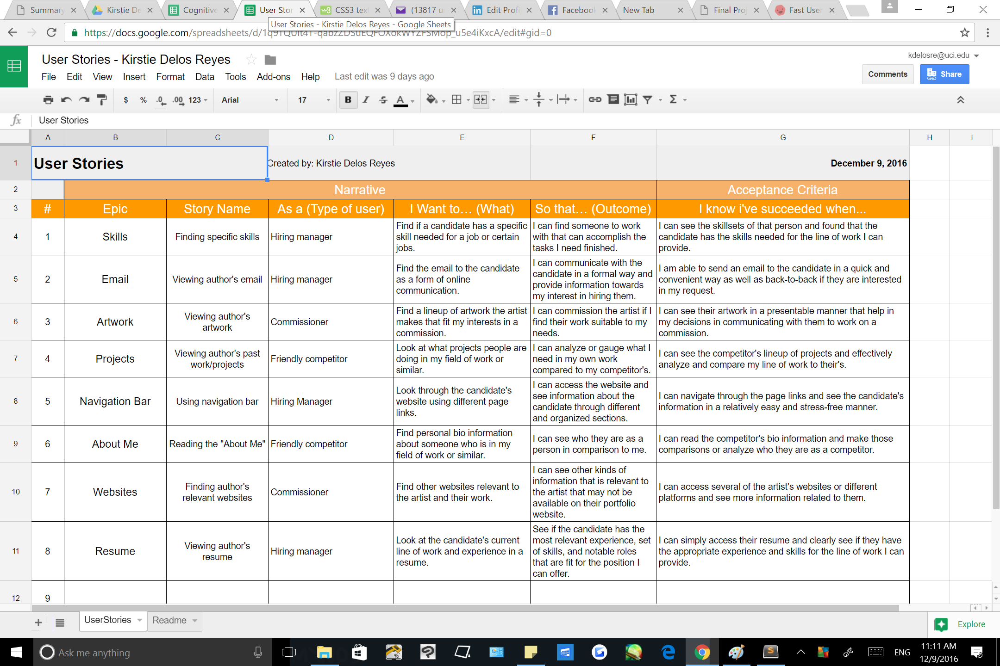
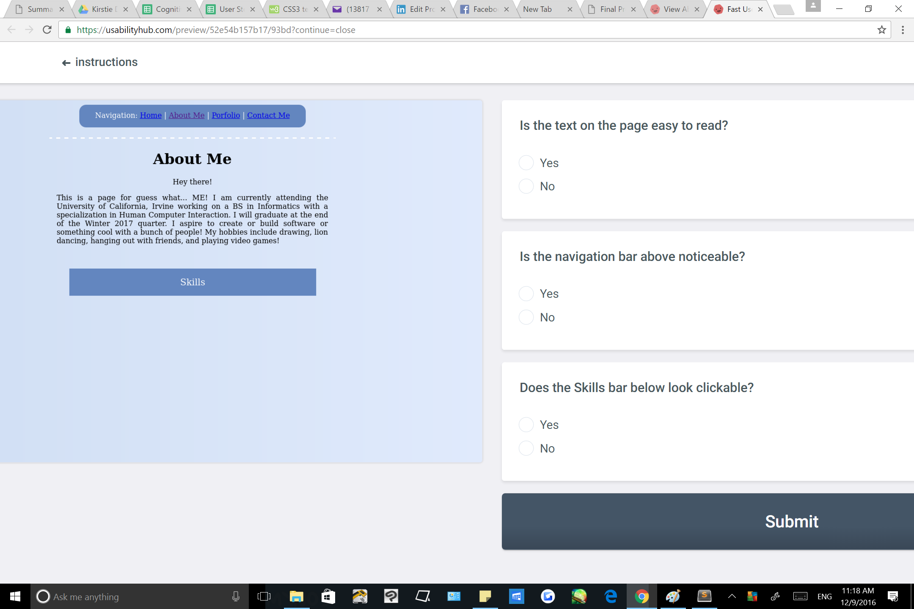

The user interviews for this part of the projects helped me become more aware of the kinds of users I was targeting. I mainly interviewed students who were in this class and other fellow students from UCI. The questions and answers from the interview has helped me gain insight as to what my users are generally expecting from portfolio websites especially mine.

A competitor analysis is about gathering data or information about the people who are working on the same type of project as you. The competitors I reviewed were working on the same project I was and I saw it as a great opportunity to compare my portfolio with theirs. I saw features from other websites such as a resume or button links to relevant websites. I believe that these features would be helpful in expanding the presentation of my skills and experience.

A feature value matrix is a list of all features relevant to your website whether or not they are implemented. I chose these features because they assist in showing all relevant information about my work in an convenient and easy-to-navigate manner.

I prioritized features by using the data I've calculated from the feature value matrix. This prioritization can help me incorporate building an interface by implementing features that are highly prioritized in terms of user and business value.

User stories were important in imagining or thinking about the kinds of users my website appeals to. I made them after doing the user research and using that knowledge from that part of the project to create them.

A cognitive walkthrough is a process where you test users to go through your website and finding out how usable it is by asking users. They are important because it shows you how usable your product is to your users. The challenges I faced conducting them included figuring out what questions worked best and which parts of the website that needed to be tested.
For the user tests I chose the Click and Question tests. I chose them because they were quick and easy for the users to follow. Finding 10 different users were a challenge, but I was lucky I knew enough people at the time. They were also tests that helped bring interest towards my users because it didn't take them too long to finish. The challenges I faced doing these tests were finding enough people to test and figuring out aspects of my website that could best benefit from the feedback. I found some links and text I could fix for the click test and have gotten feedback about the text and exapandable Skills tab on my About Me page that I could fix as well.
I surprisingly found a lot of feedback and other types of information I didn't expect when conducting the user research and testing. From the research I thought about features that didn't come to features in my mind when I first thought of them like the navigation bar. It made me realize that features that should be remembered to add as mundane as they seem. Overall, doing research on users who were in the same field as mine and reviewing the features my site gave me a better outlook on what exactly my web portfolio was and what kind of information I should put in regards to the context of the technological field.
There were a number of things I found that were useful to my website regarding the user testing. I found that the cognitive walkthroughs incited a lot of feedback towards changes I could make to my website such as the color, presentation of skills, artwork, and projects, and how well users could navigate and find more information about me. I have gotten really good responses such as how some sections were lacking in information or did not look as appealing to them. I have also gained more insight about the site through the user tests such as the pieces of text looked that looked like links and what places looked clickable on the Home page. I also elicited questions on the About Me page regarding if my skills dropdown seemed expandable and if the bio paragraph was easy to read.
From the data I have gathered so far, I will be definitely making changes that will improve my website for the best. First, I will implement the features that I found to be useful from my User Research and Testing. From the User Research I found out features that I wanted to add to my website. I wanted to add features such as a Resume section or download, more contact information, or a convenient organization of my content. I will utilize whichever frameworks that will help me organize my content better. From the User Testing, I have gotten feedback to where I should fix the color of certain text, the aethestics of my project table, and making sure that the skills button looks clickable. Some of the fixes I've done such as contact information and changing up text are quite minimal and easy to implement; however, things such as the table or skills tab takes a bit more effort to fix so those will be incorporated later when I have more time.
The only issues I have faced concerning this project was planning the project in a way that will help me find feedback from both the research and testing. This was solved by having questions answered by the professor, TA's, and fellow classmates. Finding people to do the project was a bit of a challenge, but with enough time and friends that was resolved in a smooth manner. I also found that getting feedback on things that seemed fine to me and the majority of users to be a bit off-putting, but I have come to a realization that I don't have to incorporate all the critique that has been given to me. I realize that critiques are still critiques and sometimes I forget that I still have the decision to change what is best for my own project.